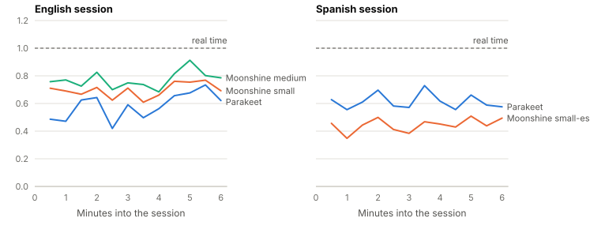
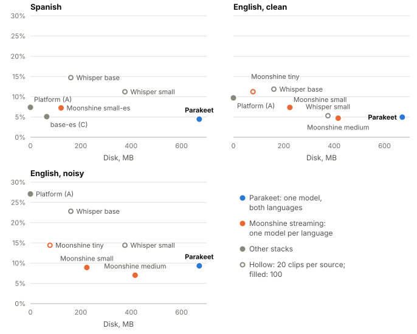
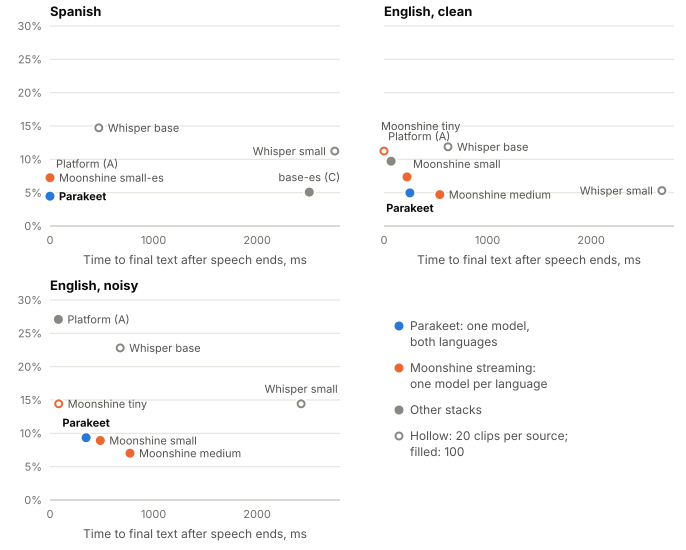
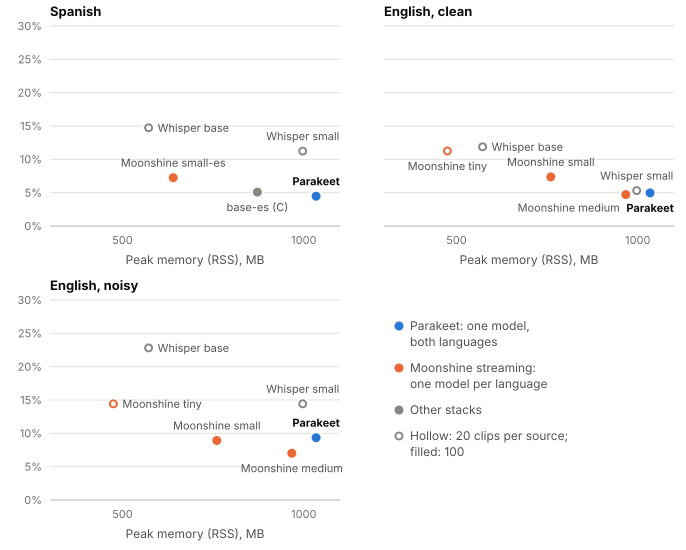

An app that transcribes speech live, entirely on the phone, in English and Spanish, can ship one
model for both languages or one model per language. English has strong open streaming models; Spanish
had no deployable streaming model when this study began. We price that asymmetry on a 2021 mid-range
phone (Snapdragon 870, 6 GB of RAM). Five deployable stacks were compared: Android’s on-device
recognizer, Moonshine streaming (English tiny, small, medium; Spanish small), Moonshine base-es,
Parakeet TDT 0.6b v3 and Whisper base and small. All heard identical audio paced to the wall clock:
100 clips per source from FLEURS English and Spanish and LibriSpeech test-other, plus
continuous six-minute sessions and a live-microphone check. One model suffices. Parakeet reaches
4.47% word error rate (WER) in Spanish, about 40% fewer errors than any per-language option
(7.2–7.4%), and is level with the best English model on clean speech (4.97% against 4.71%). It
sustains 0.6 of real time over six minutes of continuous speech without drift. It costs 670 MB
of disk and about 1.1 GB of memory, and without half a second of silence padding per segment it
drops whole sentences. Moonshine small in English and Spanish (346 MB) is the smaller, cooler
alternative, with Spanish no better than the free platform recognizer’s. That recognizer, in turn,
misses one word in four on noisy English. A live microphone reproduced the file-fed method’s text
exactly, and showed its latencies to be about 0.2 s optimistic.
Keywords: on-device speech recognition; streaming ASR; live transcription latency; Android; Spanish; Parakeet; Moonshine; Whisper; benchmarking methodology
A speech-to-text feature that runs entirely on the phone avoids the network, the server bill, and the question of sending a user’s voice elsewhere. Making it live, with text appearing while the user speaks, changes what a good model is. A model with a real-time factor of 0.3 can still feel slow if it needs the whole utterance before it emits anything. It feels broken if it keeps rewriting text the user has already read. The numbers that decide a live product are latency-shaped: how soon text appears after speech starts, how soon it is final after speech stops, how often displayed text is revised, and whether the model keeps up with the microphone over minutes rather than seconds.
This study asks one product question, for one app that must transcribe English and Spanish:
Can one model serve both English and Spanish at acceptable live latency on a mid-range phone, or do we ship a different model per language?
The two languages are not in the same position. English has strong open streaming models: Moonshine’s streaming models [5] cover English from 78 MB. When the study began, no deployable streaming model for Spanish was known. sherpa-onnx [8] offers no Spanish streaming transducer, and Moonshine’s Spanish streaming weights appeared to exist only in a training format. They turned out to be on the vendor’s content network (§2.2). The Spanish options were the platform’s own recognizer, or offline models made live by cutting the audio with a voice activity detector (VAD): Parakeet TDT 0.6b v3 [4, 6], which covers 25 European languages, and Whisper [3]. The experiment exists to price that asymmetry. The size budget was deliberately left open, so that the accuracy-against-megabytes curve could inform it.
The contributions are:
| Device | Xiaomi M2012K11AG (Poco F3 / Mi 11i) |
| System on chip | Qualcomm SM8250, Snapdragon 870 |
| CPU | 1× Cortex-A77 at 3.19 GHz, 3× A77 at 2.42 GHz, 4× A55 at 1.80 GHz |
| Memory | 6 GB, of which about 2 GB typically available |
| Software | Android 13 (API 33), arm64-v8a |
API 33 matters twice. It provides SpeechRecognizer.createOnDeviceSpeechRecognizer,
a recognizer the app does not have to ship, and EXTRA_AUDIO_SOURCE, which lets that
recognizer be fed from a file instead of the microphone.
The phone is its owner’s personal, daily-use handset, and every run followed a safety policy. Runs start only below 35 °C battery temperature, unplugged, with the battery between 30 and 80%, and abort at 43 °C. Continuous inference is capped at 10 minutes, with 2-minute breaks. Nothing is rooted, and thermal throttling is never disabled. The last rule is also a methodological choice: live transcription runs hot for minutes, so throttling is part of what is being measured. An emulator was used to test the harness only; no number reported here comes from it.
The unit of comparison is the deployable stack, because the runtime cannot be held constant across these options. Moonshine ships its own SDK, the platform recognizer is a black box running in another process, and sherpa-onnx runs the rest. Differences are therefore attributed to stacks, not to models.
| Arm | Stack | How it is live | Languages | Disk | Licence |
|---|---|---|---|---|---|
| A | Android on-device recognizer (API 33) | native streaming | en, es (language packs) | 0 MB | platform |
| B | Moonshine v2 streaming tiny, small, medium (en); small (es); SDK moonshine-voice 0.1.5 | native streaming | one per model | 78 / 224 / 416 MB; es 122 MB | MIT |
| C | Moonshine base-es, Moonshine SDK, Silero VAD | VAD + re-decode | es | 65 MB | non-commercial |
| D | Parakeet TDT 0.6b v3, int8, sherpa-onnx 1.13.8, Silero VAD | VAD + re-decode | 25, incl. en, es | 670 MB | CC-BY-4.0 |
| E | Whisper base and small, multilingual, int8, sherpa-onnx 1.13.8, Silero VAD | VAD + re-decode | en, es (told which) | 161 / 375 MB | MIT |
Arm E is a calibration baseline: Whisper expects 30-second windows and is not built for live use. Two options were excluded before testing. Vosk has no punctuation or casing and is weak on noisy speech. Whisper large-v3-turbo carries about 1.6 GB of weights against about 2 GB of available memory. Moonshine’s Spanish streaming model was first believed not to exist in a deployable format. It was found on the vendor’s content network, where the SDK’s own model catalogue fetches it, and was added in the fourth of five phases. Every model is loaded from disk at a pinned revision, and nothing downloads itself (Appendix B).
Every measured run is fed from a file, never from a microphone: nobody can say the same
sentence twice identically, so microphone input would confound every comparison with the speaker’s
delivery. To make a file behave like a microphone, 16 kHz mono 16-bit audio is released in
100 ms frames on the wall clock, and frame k is not handed over before
k·100 ms have passed. Every stack hears byte-identical input, repeatably. Arm A receives
the frames through a pipe via EXTRA_AUDIO_SOURCE, with a fresh recognizer per clip;
Arm B receives them through the Moonshine SDK’s addAudio(); Arms C–E feed them to a
VAD.
The feeder releases frame k at the start of its 100 ms slot, while a microphone can deliver it only at the end, so every stack receives audio up to one frame early. The head start is the same for every stack and does not affect comparisons. §4.5 measures its effect on absolute latency.
Arms C, D and E follow the pattern of sherpa-onnx’s own simulated-streaming example. Silero VAD [9] (threshold 0.5, minimum silence 0.25 s, minimum speech 0.25 s) cuts the paced audio into utterances, and each closed segment is decoded once for its final text. While speech is still open, the audio so far is re-decoded every 500 ms and shown as partial text. That is the Moonshine SDK’s update interval, so both kinds of stack refresh text on the same cadence. A partial is skipped if the previous decode is still running, and decoding runs on its own thread, so the feed never stalls. The VAD’s maximum speech duration is 20 s; the Kotlin API’s default of 5 s would split most of the corpus’s sentences at a breath. The sherpa-onnx arms use four inference threads. The Moonshine SDK exposes no thread setting, so ONNX Runtime’s default applies to Arms B and C.
| Source | Language | Condition | Clips | Reference words | Length |
|---|---|---|---|---|---|
FLEURS en_us, test [1] | English | clean read speech, level-matched | 100 | 1,710 | 3–8 s |
LibriSpeech test-other [2] | English | noisy read speech | 100 | 1,489 | 3–8 s |
FLEURS es_419, test [1] | Spanish | clean read speech | 100 | 1,767 | 3–10 s |
| Session, English | English | 34 FLEURS utterances, level-matched | 1 | 772 | 6.1 min |
| Session, Spanish | Spanish | 27 FLEURS utterances | 1 | 719 | 6.2 min |
FLEURS was chosen so that English and Spanish would share a corpus, and LibriSpeech
test-other adds the noisy case FLEURS lacks. FLEURS’s English recordings turned out to
be about 40 dB quieter than its Spanish ones (§5.1). Every English FLEURS figure here uses a
level-matched copy, each clip lifted by one static gain to −23 dBFS RMS, unless it is marked
“very quiet”. Sessions are built by joining unused clips with 0.5–1.5 s of silence, which gives
continuous speech with an exact reference transcript. Clip selection is seeded, and every rebuild
reproduced every earlier file byte for byte.
rtf_sustained;
sessions also record it per 30 s of audio.Runs used two to four repetitions. The first was discarded as a cold start, and arm order was randomised per repetition. The VAD arms and Moonshine’s Spanish model gave identical text in every repetition, so repetitions add evidence about timing, not accuracy. Accuracy rests on the number of clips, which is why each source grew from 20 to 100 (§5.5). WER differences between two stacks are tested with a paired bootstrap over clips and reported as 95% intervals. Latencies are medians. Sessions ran once per language per stack, so they are indicative. A drift over a session is tested with a Spearman rank correlation against position and a permutation test.
| Stack | Disk | Spanish | English, clean | English, noisy |
|---|---|---|---|---|
| A Platform recognizer | 0 MB | 7.39% (3.55) | 9.72% (5.22) | 27.09% (20.11) |
| B Moonshine tiny-en | 78 MB | — | 11.25% (5.76)* | 14.43% (6.44)* |
| B Moonshine small-en | 224 MB | — | 7.36% (3.01) | 8.92% (4.19) |
| B Moonshine medium-en | 416 MB | — | 4.71% (1.73) | 7.02% (3.58) |
| B Moonshine small-es | 122 MB | 7.24% (2.27) | — | — |
| C Moonshine base-es | 65 MB | 5.09% (2.05) | — | — |
| D Parakeet TDT 0.6b v3 | 670 MB | 4.47% (1.76) | 4.97% (2.30) | 9.34% (5.57) |
| E Whisper base | 161 MB | 14.73% (4.35)* | 11.88% (6.64)* | 22.82% (9.62)* |
| E Whisper small | 375 MB | 11.24% (4.22)* | 5.31% (2.39)* | 14.43% (6.19)* |
Spanish. Parakeet is the most accurate option, at 4.47%. It beats the platform recognizer
by 2.9 points and Moonshine’s Spanish streaming model by 2.8, both resolved (Table 5): about 40%
fewer errors than any per-language option. Moonshine small-es is level with the platform
recognizer (7.24% against 7.39%). Moonshine publishes 4.9% for it, on different data, decoding whole
utterances; that did not carry over to this corpus and pipeline. Arm C is level with Parakeet at a
tenth of the disk, but it is not live (§4.2), and its licence forbids shipping it.
English. Moonshine medium is the most accurate English model (4.71% clean, 7.02% noisy). Parakeet is level with it on clean speech and 2.3 points behind on noisy speech, a gap the data do not resolve. Much of that gap is one failure mode, which padding fixes (§5.7). The platform recognizer is competitive on clean speech (9.72%), but it misses about one word in four on noisy speech (27.09%), 18 points worse than Moonshine small.
| Comparison | Difference | 95% interval | Verdict |
|---|---|---|---|
| Spanish | |||
| Platform − Parakeet | +2.9 | +0.6 to +5.8 | Parakeet better |
| Moonshine small-es − Parakeet | +2.8 | +1.3 to +4.3 | Parakeet better |
| Moonshine small-es − base-es (C) | +2.2 | +0.5 to +3.8 | C better |
| Platform − Moonshine small-es | +0.1 | −2.7 to +3.5 | not resolved |
| Platform − base-es (C) | +2.3 | −0.0 to +5.1 | not resolved, only just |
| base-es (C) − Parakeet | +0.6 | −0.5 to +1.8 | not resolved |
| English | |||
| Platform − Moonshine small, noisy | +18.2 | +12.9 to +23.7 | Moonshine better |
| Platform − Moonshine small, clean | +2.4 | +0.1 to +5.1 | Moonshine better, barely |
| Platform − Parakeet, clean | +4.8 | +2.6 to +7.4 | Parakeet better |
| Moonshine small − medium, clean | +2.7 | +1.5 to +3.9 | medium better |
| Moonshine small − medium, noisy | +1.9 | +0.0 to +3.8 | medium better, barely |
| Moonshine small − Parakeet, clean | +2.4 | +1.3 to +3.6 | Parakeet better |
| Moonshine small − Parakeet, noisy | −0.4 | −2.8 to +1.7 | not resolved |
| Moonshine medium − Parakeet, clean | −0.3 | −1.2 to +0.7 | not resolved |
| Moonshine medium − Parakeet, noisy | −2.3 | −5.1 to +0.2 | not resolved |
| Stack | Final text, ms | First text, ms | Revisions |
|---|---|---|---|
| A Platform recognizer | 0 / 69 / 81 | 711 / 730 / 752 | 6 / 8 / 8 |
| B Moonshine tiny-en | — / 0 / 84 | — / 745 / 625 | — / 16 / 10 |
| B Moonshine small-en | — / 222 / 486 | — / 968 / 818 | — / 8 / 8 |
| B Moonshine medium-en | — / 539 / 772 | — / 996 / 810 | — / 7 / 8 |
| B Moonshine small-es | 0 / — / — | 738 / — / — | 14 / — / — |
| C Moonshine base-es | 2504 / — / — | 1328 / — / — | 8 / — / — |
| D Parakeet | 0 / 250 / 349 | 980 / 1528 / 1366 | 12 / 12 / 8 |
| E Whisper base | 471 / 618 / 678 | 1098 / 1196 / 1133 | 14 / 9 / 16 |
| E Whisper small | 2750 / 2683 / 2424 | 1721 / 1833 / 1787 | 2 / 4 / 5 |
results/README.md) differ by at most a few tens of milliseconds.Final text is quick for every live stack. It takes 0–350 ms for Parakeet and 0–81 ms for the platform recognizer. Moonshine takes 0–772 ms, rising with model size, because each model pass takes about 200, 450 and 550 ms for tiny, small and medium. Arm C and Whisper small take 2.4–2.8 s: their decodes are slower than the 500 ms partial interval, so the decode thread never idles while someone speaks, and final decodes queue behind partials.
First text is where the VAD arms are weakest. From speech onset, Parakeet shows text in 1.0–1.5 s, against 0.6–1.0 s for Moonshine and about 0.7 s for the platform recognizer. A partial has to wait for the VAD to declare speech (at least 0.25 s of it), then one 500 ms interval, then a decode. Moonshine’s first text is paced by its SDK’s 0.5 s update interval, not by its roughly 80 ms of algorithmic lookahead: 108 of 114 first-text times for Moonshine tiny fell within 100 ms of 40 + k·500 ms. Spanish is not slower to show text on any stack; it only looked so when timed from the start of the clip (§5.6).
| Stack | Compute | Peak memory | Battery | Cooling pauses (run) |
|---|---|---|---|---|
| A Platform recognizer | — | — (in Google’s process) | 2–4 points | 0 (39–64 min) |
| B Moonshine tiny-en | 0.40–0.42 | 363–475 MB | 6 points | 0 (39 min) |
| B Moonshine small-en | 0.72–0.73 | 605–760 MB | 10 points | 0–2 (39–111 min) |
| B Moonshine medium-en | 0.80–0.82 | 933–967 MB | 11–13 points | 1–7 (44–132 min) |
| B Moonshine small-es | 0.43 | 640 MB | 9 points | 0 (61 min) |
| C Moonshine base-es | 1.16 (0.45) | 872 MB | 28 points | 8 (78 min) |
| D Parakeet | 0.52–0.62 (0.20–0.23) | 1027–1034 MB | 10–13 points | 0–3 (41–81 min) |
| E Whisper base | 0.76–0.88 (0.27–0.30) | 572 MB | 15 points | 7 (87 min) |
| E Whisper small | 1.24–1.36 (0.52–0.59) | 997 MB | 29 points | 15 (156 min) |
Showing live text costs more than the model. Final decodes alone need 0.20–0.23 of real
time for Parakeet, and re-decoding the open utterance every 500 ms raises that to 0.52–0.62.
Whisper small goes past 1.0 (§5.8). Memory did not bite. Parakeet had been flagged in
advance as the stack most likely to fail on memory, with 1.5–2 GB expected. It peaked at about
1.03 GB per clip, loaded in 2.6 s, and neither crashed nor was killed in more than 900
clips. Heat follows compute. Whisper small paused to cool 15 times in 156 minutes and Arm C
8 times in 78, while Moonshine small-es never passed 31.7 °C.
A stack can keep up clip by clip and still fall behind the microphone once the phone is hot, and then never catch up. The stacks that survived the per-clip comparison were therefore run on one continuous session per language: 34 English utterances in 6.1 minutes and 27 Spanish ones in 6.2, fed in real time, one stack per run, with a 2-minute break between the two sessions. The phone was unplugged and idle on its home screen, and its system log confirms nobody used it during these runs (§5.10). Every 30 s of audio the harness recorded compute, feeder delay, battery temperature, memory and phone use, and for every final segment it recorded when the text was committed.

| Session | Compute, session (per clip) | Worst 30 s | Final text, median / p90 | Drift | Temperature | WER |
|---|---|---|---|---|---|---|
| Parakeet, English | 0.59 (0.62) | 0.73 | 0 / 366 ms | none (p = 0.27) | 32.5 → 35.0 °C | 11.14%* |
| Parakeet, Spanish | 0.61 (0.56) | 0.73 | 23 / 416 ms | none (p = 0.24) | 34.2 → 35.7 °C | 6.26% |
| Moonshine small-en | 0.70 (0.73) | 0.77 | 0 / 646 ms | none (p = 0.97) | 33.0 → 35.2 °C | 7.25% |
| Moonshine small-es | 0.45 (0.43) | 0.51 | 0 / 178 ms | none (p = 0.47) | 33.2 → 33.5 °C | 8.62% |
| Moonshine medium-en | 0.78 (0.81) | 0.91 | 220 / 919 ms | none (p = 0.41) | 33.2 → 36.7 °C | 6.74% |
Nothing falls behind. Over six continuous minutes every stack used what it used per clip,
within 0.05 of real time, and its worst 30 seconds stayed well below real time. Moonshine stalls its
feeder by up to 1.6 s while it decodes, because it decodes inside addAudio(), but
the delay did not accumulate. Nothing throttled. Final-text lag shows no trend in any session.
Parakeet’s English compute does rise through its session, from about 0.5 to 0.7, but that is the
audio: its later sentences are longer, and every partial re-decodes everything said so far. Its
decode speed per second of audio actually improved slightly (105 to 92 ms), and its Spanish
session, run next on a warmer phone, is flat. The platform never reported a thermal status above
“none”. Memory creeps up. Every stack ended a session 35–170 MB above its level at 30
seconds, and Parakeet reached 1.11 GB across its two sessions. The growth is not steady (Moonshine
medium’s fell back by 100 MB mid-session), and its cause was not established.
Every measured run rests on the claim that pacing a file shows a model what a live microphone
would. The check tests it directly. The phone’s owner read six corpus sentences aloud while one stack
transcribed the microphone live (AudioRecord, VOICE_RECOGNITION source,
the same 100 ms frames). The recording was kept, and the same samples then went through the same
stack again, file-fed exactly as in every measured run. There were four takes of 60 s:
Parakeet and Moonshine small, in English and in Spanish.
| Parakeet, en | Parakeet, es | Moonshine small-en | Moonshine small-es | |
|---|---|---|---|---|
| Text | identical | identical | 2 of 82 words differ | identical |
| Compute | 0.39 / 0.37 | 0.34 / 0.33 | 0.54 / 0.54 | 0.31 / 0.31 |
| Feeder delay, worst | 20 / 20 ms | 19 / 28 ms | 923 / 798 ms | 517 / 498 ms |
| Segments | identical | identical | differ slightly | differ slightly |
| Final text later live (median) | +210 ms | +208 ms | +132 ms | +256 ms |
The simulation holds for text and compute. Parakeet produced byte-identical text from the live microphone and from the file, and so did Moonshine in Spanish. Moonshine’s English differed by two words, within the small repetition-to-repetition variation its English streaming already showed. Compute matched within 0.02 everywhere. Live text arrives about 0.2 s later. With identical segments, Parakeet’s VAD closed each one 0.19–0.20 s later relative to the audio, and its text committed 0.21 s later. About 0.1 s of that is the feeder’s one-frame head start (§3.1), and the rest is the phone’s capture path. Every first-text and final-text figure in this paper is therefore about 0.2 s optimistic for a live microphone, equally for every file-fed stack. This microphone is quiet. Speech reached the model at −39 to −42 dBFS RMS, about 17 dB below the level-matched corpus and 20 dB above the very quiet FLEURS English, and Moonshine produced text for every line. The takes are the owner’s voice; they stay private and are not scored.
Figures 2–4 draw the per-clip results of §4.1–4.3 as costs against accuracy, one panel per condition. Lower and further left is better. Blue is Parakeet, orange Moonshine’s streaming models, gray the other stacks; hollow points were measured on 20 clips per source, filled ones on 100. The recommendation in §6 reads off them: in Spanish, only Parakeet sits low; in English, Moonshine medium and Parakeet share the bottom, at different sizes; and nothing bundled is as cheap as the platform recognizer, which fails on noisy English.


base-es) and Whisper small
take 2.4–2.8 s.
Most of the following changed a number that had already been published. None of the eleven is exotic, which is the reason for listing them.
FLEURS was chosen so that English and Spanish would be “the same corpus, recorded the same way”. On loudness they are not: the English test recordings sit at a median of −62.6 dBFS RMS, against −22.2 for Spanish and −23.6 for LibriSpeech. The difference is inherited from the dataset. The platform recognizer copes (9.69% on the quiet clips). Moonshine returns no text, and no error, on some of them: Moonshine tiny left 15 of 120 rows blank and scored 30.05%. The same clips lifted by a static gain left none blank and scored 11.25%. The six-minute English session, built before this was known, had 25 of its 34 utterances below −50 dBFS, and was level-matched before any session was run.
The first scorer skipped rows that returned no text. That removed their words from the denominator, so a stack that heard nothing scored better for it: Moonshine tiny’s pilot scored 19.3% that way and 26.9% in fact.
It is tempting to drop rows in which the feeder fell behind schedule. But that delay is the recognizer refusing input, and it happens most on the audio the recognizer finds hardest. In one run, dropping those rows made the platform recognizer’s final-text latency on noisy English look 2.8 times better (315 to 114 ms), by keeping only the easy third. Headline figures use every row.
The scorer read “1848” as “one thousand eight hundred forty eight”, while LibriSpeech’s references say “eighteen forty eight”. Stacks that write years as digits lost about four WER points on noisy English (the platform recognizer: 33.33% to 29.31% on 20 clips once fixed). Clock times, percent signs and thousands separators followed. Each rule applies to reference and hypothesis alike.
Deterministic stacks produce the same text in every repetition, so four repetitions of 20 clips are 20 clips of evidence. On 20 Spanish clips, Parakeet’s lead over the platform recognizer was +1.55 points with a 95% interval of −2.70 to +5.18; on 100 clips it is +2.91, from +0.55 to +5.81. Some 20-clip point estimates between English models reversed on 100 clips.
Every stack looked 0.6–0.9 s slower to show Spanish text than English. The FLEURS Spanish clips open with a median 1.31 s of silence, against 0.32–0.46 s for the English sources, and first text was timed from the start of the clip. From speech onset, the platform recognizer shows text in about 0.7 s in both languages.
On some segments Parakeet’s final decode is empty, although partial text was on screen moments earlier. Silero VAD starts a segment close to speech onset, and Parakeet then receives audio that begins almost mid-syllable. A PC reproduction of the same pipeline, with the same model files, shows what padding does: half a second of leading silence moves noisy English from 9.47% to 7.12%, clean English from 5.26% to 4.68% and Spanish from 4.13% to 4.02%. Empty segments fall from 8 to 2. Trailing silence alone makes things worse (12.09%). In the English session, one 6.9 s segment of 55 came back empty: a whole 22-word sentence. With the padding it decodes word for word. Padded Parakeet was not measured on the phone.
Re-decoding the open utterance every 500 ms takes Parakeet from 0.20–0.23 to 0.52–0.60 of real time, Whisper base from 0.27–0.30 to 0.76–0.88, and Whisper small from 0.52–0.59 to 1.24–1.36. Above 1.0 the decode thread never idles while someone speaks. A final that arrives during a partial has to wait for it: a median of 44–134 ms for Parakeet, and 790–1112 ms for Whisper small. The partial cadence is a dial between how live the text looks and how hot the phone gets.
The feeder releases each frame at the start of its slot (§3.1). This was known in principle from early on, when the “end of speech” timestamp was corrected, and treated as a small, uniform optimism. The microphone check measured it together with the capture path: 0.2 s in all. A new harness should release each frame at the end of its slot. The published figures are left as measured, so that runs stay comparable.
One session run overlapped a video call. It read 0.57 of real time where the per-clip runs read 0.43, with the battery at 38.0 °C, the highest reading of the study, and nothing in the row showed the cause. Clearing the recent apps killed that run and another. The system log showed both, and both runs were discarded. The harness now records screen and call state, and waits out a call before each clip. The second episode also showed the cost of a large model: with about 850 MB resident, opening two apps put the phone into memory thrashing, and the low-memory killer ended 21 cached apps in 17 seconds.
addAudio(), stalling the caller for the length
of a model pass. A live app must not call it from the thread that reads the microphone.libonnxruntime.so, in different
builds. Picking one at packaging would give one SDK the other’s runtime; sherpa-onnx’s static-link
build avoids the collision.| Live stack | Disk | Spanish WER | English WER, clean / noisy | Final text | First text | Peak memory | Compute, 6 min |
|---|---|---|---|---|---|---|---|
| Parakeet (one model) | 670 MB | 4.47% | 4.97 / 9.34% | 0–350 ms | 1.0–1.5 s | 1.03–1.11 GB | 0.59–0.61 |
| Moonshine small-en + small-es | 346 MB | 7.24% | 7.36 / 8.92% | 0–490 ms | 0.7–1.0 s | 0.64–0.76 GB | 0.45–0.70 |
| Moonshine medium-en + small-es | 538 MB | 7.24% | 4.71 / 7.02% | 0–770 ms | 0.7–1.0 s | 0.97 GB | 0.45–0.78 |
| Moonshine small-en + platform (es) | 224 MB + pack | 7.39% | 7.36 / 8.92% | 0–490 ms | 0.7–1.0 s | 0.76 GB | 0.70 (en) |
One model can serve both languages live on this phone, and it is Parakeet. Ship it as the one model, and pad every VAD segment with about half a second of leading silence.
What one model buys is Spanish accuracy. Parakeet makes about 40% fewer Spanish errors than any per-language option, and it serves English within reach of the best: level with Moonshine medium on clean speech, and 2.3 points behind on noisy speech, a gap that padding is expected to close. Over six continuous minutes it used 0.6 of real time with no drift. Its costs are 670 MB of disk, about 1.1 GB resident, which on a 6 GB phone pushes other apps out of memory, and first text 1.0–1.5 s after speech starts. The padding is not optional polish: unpadded, it silently drops whole sentences.
What two models buy is size, first-text speed and heat, not Spanish accuracy. Moonshine small in both languages is half Parakeet’s disk, MIT-licensed, one runtime, the coolest bundled stack, and shows first text 0.2–0.6 s sooner. Its Spanish, however, is no better than the free platform recognizer’s. If disk, memory or heat matter more than Spanish accuracy, it is the choice. Moonshine medium is the most accurate English model, for 192 MB more.
The platform recognizer does not make bundling a model unnecessary. It is free and fast, and its Spanish is as good as Moonshine’s. But it misses one word in four on noisy English, it needs an on-device language pack the user may not have, and it belongs to Google, not to the app.
Beyond the choice of model, a live app built on these results should decode off the capture thread (Moonshine blocks its caller for up to 1.6 s), tune the partial cadence per model rather than leave it at a default, budget for about 1 GB of memory with Parakeet, and expect about 0.2 s more latency from a live microphone than any file-fed figure shows.
On a 2021 mid-range phone, one open model can transcribe English and Spanish live, entirely on-device. Parakeet TDT 0.6b v3 is the most accurate Spanish option measured, competitive in English, and keeps well ahead of real time over continuous speech. It needs 670 MB of disk, about 1 GB of memory, and half a second of silence in front of every segment. Per-language models buy a smaller, cooler app, not better Spanish. The method itself held up under a live microphone, with one correction: live text arrives about 0.2 s later than a paced file suggests.
google/fleurs, CC-BY-4.0.openslr/librispeech_asr, CC-BY-4.0.moonshine-voice 0.1.5.nvidia/parakeet-tdt-0.6b-v3. ONNX
int8 export used here: csukuangfj/sherpa-onnx-nemo-parakeet-tdt-0.6b-v3-int8.SpeechRecognizer.createOnDeviceSpeechRecognizer and
RecognizerIntent.EXTRA_AUDIO_SOURCE, API level 33.github.com/k2-fsa/sherpa-onnx.onnx-community/silero-vad.onnxruntime.ai.github.com/jitsi/jiwer.Everything needed is in the repository at tag v1.0. Weights and audio are not
redistributed: scripts fetch them at pinned revisions and rebuild the corpus deterministically.
Scoring runs on a PC; the phone emits text and timings only. All scripts are in
scripts/ and run with the project’s Python environment.
| Step | Command |
|---|---|
| Corpus | scripts/fetch_corpus.py then scripts/build_corpus.py |
| Models and runtime | scripts/fetch_models.py --arm B (C, D, E likewise); scripts/fetch_runtime.py |
| Plumbing, emulator | scripts/run_bench.py --device emulator --plumbing |
| Short clips, phone | run_bench.py --device physical --arms D:parakeet-tdt-v3-int8 --langs en,es |
| Sessions | the same, plus --buckets session --sources fleurs_en_norm,fleurs_es --reps 1 |
| Microphone check | run_bench.py --device physical --mic D:parakeet-tdt-v3-int8 --langs en |
| Score and compare | scripts/summarize.py, scripts/compare.py --standard, scripts/session_report.py |
| Figures | scripts/plot_tradeoffs.py; this paper: scripts/build_paper.py |
The harness refuses to start unless storage, battery level, temperature and charging state are in range. It checks again before every clip and every 30 s during a session-length clip, waits out calls, and pauses before any clip that would take continuous inference past 10 minutes.
| Artefact | Source | Pinned revision |
|---|---|---|
| Moonshine streaming en, base-es | HF moonshine-ai/moonshine-voice-assets, set quantized_26_08_21 | 0bf2f2e5 |
| Moonshine small-streaming-es | download.moonshine.ai, quantized_26_08_24 | SHA-256 per file |
| Parakeet TDT 0.6b v3 int8 | HF csukuangfj/sherpa-onnx-nemo-parakeet-tdt-0.6b-v3-int8 | 2bda32ec |
| Whisper small, base | HF csukuangfj/sherpa-onnx-whisper-small, -base | 8f3c18b3, bb53ee20 |
| Silero VAD | HF onnx-community/silero-vad | e71cae96 |
| sherpa-onnx | GitHub release 1.13.8, static-link AAR | SHA-256 b22c3fc1… |
FLEURS en_us, es_419 | HF google/fleurs | 70bb2e84 |
LibriSpeech test-other | HF openslr/librispeech_asr | 71cacbfb |
Full hashes, file lists and sizes are in models/MODELS.md and
corpus/SOURCES.md. Model licences: MIT (Moonshine streaming, Whisper, Silero VAD),
CC-BY-4.0 (Parakeet), Moonshine Community Licence, non-commercial (Moonshine base-es, an
experiment only). The corpus sources are CC-BY-4.0.